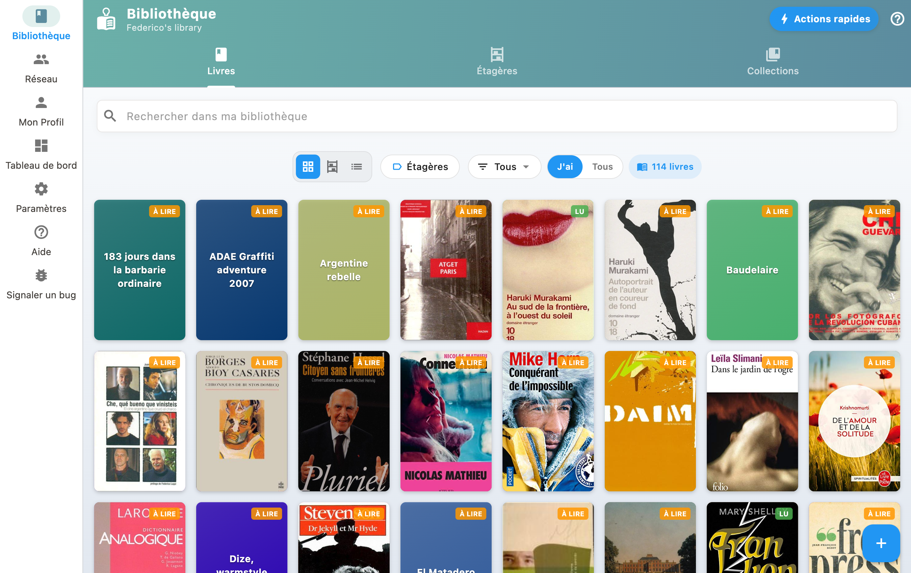
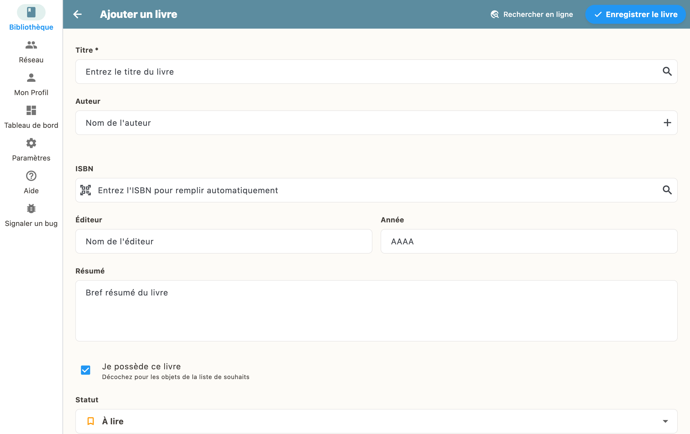

Cómo añadir un libro
Ve a "Mi biblioteca" y pulsa el botón "+". Puedes escanear un código de barras o buscar por título o ISBN.

Escanear un código de barras
Abre la aplicación, pulsa el botón "+" abajo a la derecha y elige "Escanear".
Apunta con la cámara al código de barras del libro. BiblioGenius lo reconoce automáticamente y recupera todos los metadatos: título, autor, portada y demás.
Buscar por título o ISBN
También puedes buscar un libro por su título o su número ISBN:
- Pulsa "+" y luego "Buscar"
- Escribe el título, el autor o el ISBN
- Elige el resultado correcto en la lista
- El libro se añade con toda su información
Entrada manual
Si el libro no aparece en los catálogos, puedes crearlo a mano rellenando el título, el autor y los demás campos.
